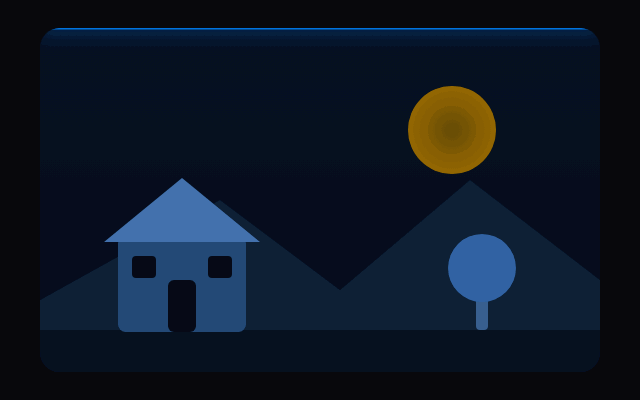
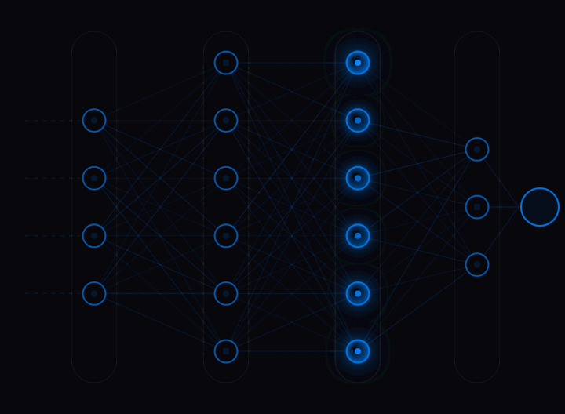

Galería de la IA.
Imágenes y animaciones que muestran cómo piensa una máquina.

Paisaje generado
Una escena creada a partir de una frase.

Red en movimiento
Los nodos se encienden cuando pasa la información.

Curvas de aprendizaje
El error baja mientras el modelo entrena.
Cerebro digital
Una forma de imaginar las conexiones de la IA.